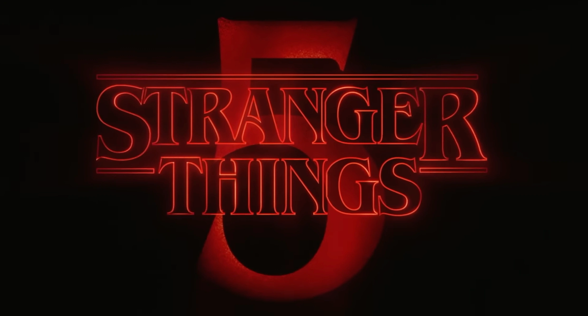

ÚLTIMAS NOTICIAS

It: Welcome to Derry llegó a su final y deja una marca en el terror televisivo
La serie It: Welcome to Derry concluyó oficialmente su primera, recibiendo una respuesta muy positiva tanto del público como de la crítica. A lo largo de sus episodios, la producción logró expandir el universo de Derry con una atmósfera oscura e inquietante, profundizando en los orígenes del mal que acecha al pueblo. Muchos destacan el equilibrio entre terror psicológico y drama humano, así como el cuidado visual y narrativo que sostuvo la tensión hasta el final. El desenlace fue calificado por numerosos espectadores como intenso, maduro y emocional, consolidando a la serie como una de las propuestas más destacadas del género en los últimos años.
Publicado: 2025

Temporada final de Stranger Things
La temporada final de Stranger Things está generando un nivel de expectativas enorme entre los fans y la crítica, especialmente después de que sus primeros episodios se convirtieran en uno de los estrenos más vistos del año en streaming. Varios críticos coinciden en que la serie está logrando mantener la intensidad y el misterio que la hicieron famosa, pero con un tono más épico y cinematográfico, lo que explica por qué esta última temporada está recibiendo tantas reseñas positivas antes incluso de su final.
Publicado: 2025
Avatar 3 promete explorar un nuevo lado de Pandora
Avatar 3 ya genera grandes expectativas entre los fans de la saga, con adelantos que sugieren una expansión significativa del mundo de Pandora. La nueva entrega buscará mostrar regiones inéditas del planeta, introduciendo clanes nunca antes vistos y explorando culturas con una visión más compleja y menos idealizada. James Cameron adelantó que la historia profundizará en los conflictos morales de los Na’vi y los humanos, presentando personajes con motivaciones más ambiguas. La película apunta a elevar la carga emocional y narrativa, manteniendo el impacto visual que caracteriza a la franquicia y ampliando su universo de forma ambiciosa..
Publicado: 2025